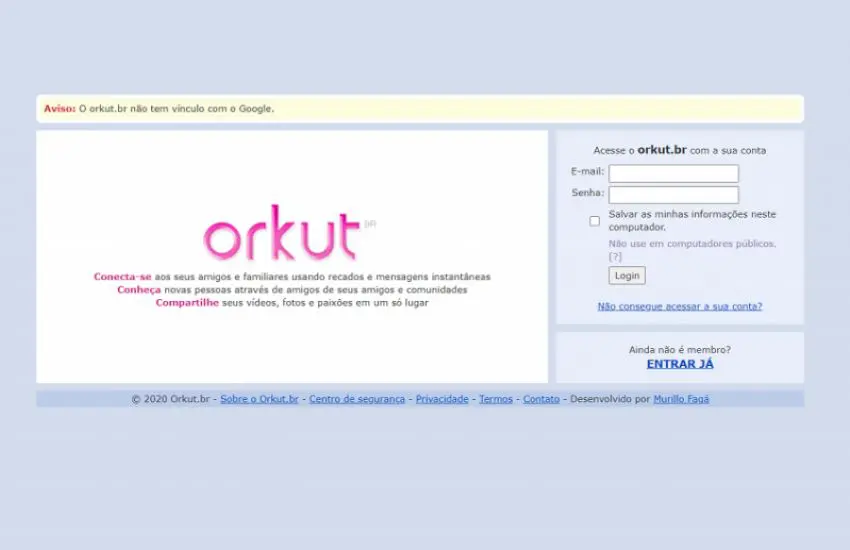
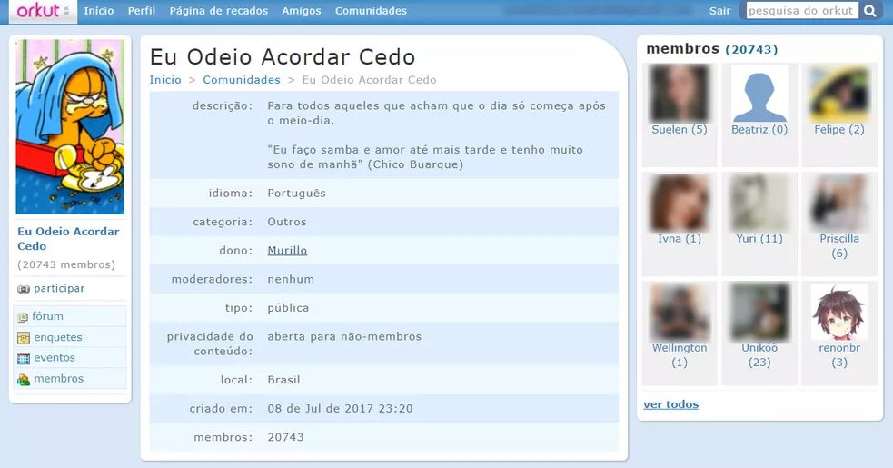
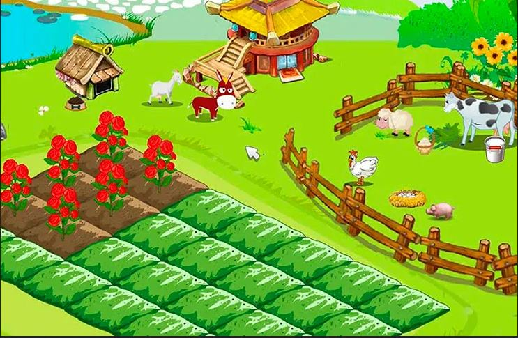

"- ah... Orkut. Uma das primeiras plataformas sociais que fez o que poucos fizeram na época: Ganhar a interação de seus usuários. Mesmo com o acesso à internet restrito, pouco usual e de velocidade questionáel (Se lembra da internet discada!?) a rede social apareceu como a forma preferida de milhões de pessoas para se interagir online, seja por meio dos seus queridos depoimentos, que se fossem queridos mesmo, recebiam a aproação de quem os recebiam e apareceriam ali, em um cantinho especial que para todo mundo ver a proa de carinho.
E quem poderia esquecer das famosas comunidades que juntaam milhares de pessoas com interesses em comum em um só lugar. Alguém aí ainda faz parte da turma "Eu Odeio Acordar Cedo"?
A doce nostalgia de um mundo que não era tão caótico na época, onde queriamos apenas fazer o máximo de amigos possível e compartilhar nossas brilhantes ideias de um mundo melhor. E é essa nostalgia que queremos trazer de volta. E não só mirando em seus antigos usuários, mas tentando mostrar a nova geração como era a primeira rede social que tomou conta de uma nação."


"- Calma... Logo logo estaremos de olta plantando nossas frutas e legume e roubando a fazendinha dos nossos queridos amigos. E se você é daqueles que tem mais familiaridade com os bonecos cabeçudos, estaremos esperando com os nossos Buddy Pokes de braços abertos.
O importante agora é trabalharmos em um retorno o mais bree possíel. Ainda que não tenhamos uma data fixa para este retorno, estamos trabalhando ao maximo para poder adaptar a nossa querida rede social aos padrões de interatiidade de hoje, para que possamos entregar a você a melhor experiência da rede, assim como um dia, lá atraaaaaas, fizemos, quando você nos permitiu intermediar sua conexão com o resto do mundo. Até lá, estaremos tão anciosos quanto você afinal, o mundo é um lugar melhor quando nos conhecemos um pouco mais..."

Desenvolvido por: EmuladorJonas ©